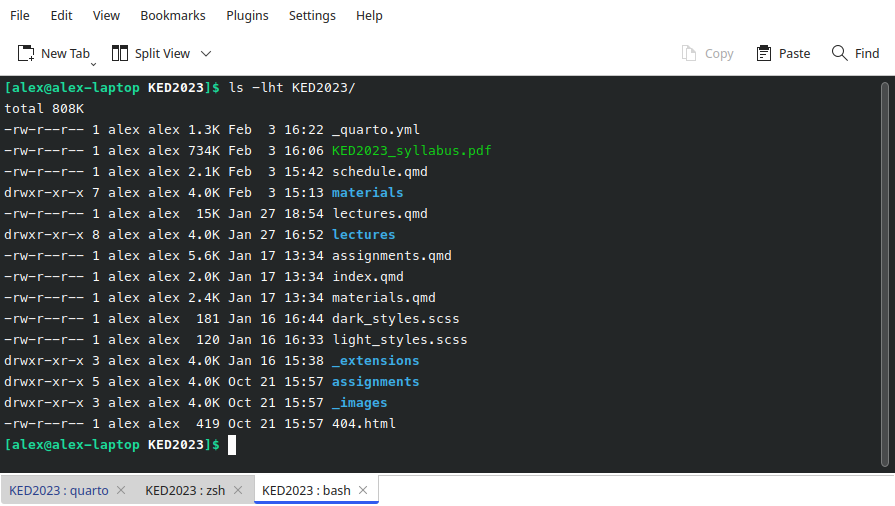

The ABC of Computational Text Analysis
#3 Setting up your Development Environment
Outline
- research workflow :bookmark_tabs:
- interacting with computers :magic_wand:
- installation of programs :hammer:
- Exkurs: wieso braucht es das ganze Tooling?
- Wissenschaft als Praxis
- Grundverständis für Mensch-Maschine-Interaktion
- Installation
- abschliessen/Fehler beheben
- Zeitplan für Installation schwierig abzuschätzen
- Feierabend wenn System läuft
Recap last Lecture
- textual data is challenging
- machine-readable data
- Bedeutung ist kontextabhängig
- Unvergleichbarkeit diskreter Symbole
- Ziel: Abstraktion + Kontextualität kombinieren
- Quali + Quanti
- Generalisierung + Rekontextualisierung
- Fragen
- wichtigste Dateiformate?
- txt, csv, tsv (xml)
- Sinn von Texteditor?
- keine Formatierung
- wichtigste Dateiformate?
The Zen of Organizing
Research means Organizing
How a computational approach helps
- scripts as documentation :memo:
- efficient automation :recycle:
- “don’t repeat yourself”
- less error-prone :woman_facepalming: :man_facepalming:
- reproducible :100:
- Wissenschaft auch praktische Seite, nicht nur theoretische
- chaotisch statt strukturiert (aufgeräumte Papers kommen erst ganz am Ende)
- Organisation von Komplexität als Problem
- Reproduzierbarkeit ist Arbeitsgrundlage und höchster Wert (mehr noch als Wahrheit)
- Wiederverwendung von Code/Datensatz + Literatur/Theorien
- Wieso computational approach?
- Reproduzierbarkeit und Kritisierbarkeit garantiert
- Automatisierung von repetitiven Aufgaben -> spart Zeit
- Code strukturiert/dokumentiert Arbeitsablauf/Entscheidungen
- gegen Vergessenheit
- schützt nicht vor Fehler, aber sichert inkrementellen Fortschritt
- wichtig für grössere Projekte + Abschlussarbeiten
- kurzfristig langsamer, langfristig effizienter
- keine mühsame Fehlersuche, Wiederholung
Organizing Literature
- manage literature in one place
- generating bibliographies
- collect with a click in your browser

- Organisation betrifft auch Literatur
- Fragen, wer Literaturverwaltungssystem nutzt
- was? wieso nützlich?
- Zotero
- open-source, viele Features, konstante Weiterentwicklung
- Nutzen
- verschiedene Zitationsstile
- einmal indexiert, immer gleich
- Recherche: Metadaten automatisch setzen
- Bibliographie automatisch zusammenstellen
Computers
Two Trends in Computing
- everyday, mobile, cloud-centered, touch/click-based approach
- single-purpose application
- smartphones + tablets
- engineering, open-source, machine-oriented approach
- powerful due to modularity
- workflow for data science
[see also @Healy2019]

- Computer haben sich massiv verändert -> am meisten an Oberfläche
- Spannungsfeld zweier Trends
- Einfachheit –> Eingeschränktheit; nur machen, was vorgesehen ist
- Flexibilität –> technisches Vorwissen
- Apple: GUI/Bedienung Angleichung an physische Welt
- Engineering: schwieriger Einstieg/Lernen, dafür sehr viel effektiver/vielseitiger
- ist alternativlos für Standardisierung unstandardisierter Daten
- keine Zauberei, aber sehr nützlich
- von Wissen/Tools der Engineers profitieren
- nicht selber Tools bauen
- geniale Arbeitsabläufe + Modularität
Operating Systems (OS)
Between hardware and programs
- Microsoft Windows
- macOS
- Linux-based systems :nerd_face:
- OS
- Windows = Dominator, Alltag
- Linux = stable, secure, free, innovative. Became more user-friendly, sometimes still issue
- Mac = restricted to Mac HW, Unix-Derivat, vereint beide Welten
- Betriebssysteme wie Fahrräder oder Autos
- Systeme gleichen sich immer mehr an
- Installation von Linux in Windows
User Interfaces
graphical user interface (GUI)

command line interface (CLI)

- historisch nur CLI zur Computersteuerung
- GUI von Apple entwickelt 1984, in 90er Standard
- CLI ist mehr als Sentimentalität
- mächtiger dank Automatisierbarkeit
- schneller
- auf Server einzig mögliche Interaktion
“An awesome Programmer saves the World”
- CLI auch in Popkultur, allerdings falsch dargestellt
Human-Machine Interaction
How to tell the computer effienctly
- text commands instead of clicks
- similar to human languages
- syntax (form)
- semantics (meaning)
- computers are literalists
- Automatisierung über GUI nicht möglich
- statt “hier” klicken, einfach Skript
- viele verschiedene Programmiersprachen
- Syntax sehr restriktiv
- Computer sind ziemlich doof, aber sehr gehorsam.
- Machen genau, was man ihnen sagt, nichts mehr, nichts weniger. Nie.
Programming
- command languages
- Bourne-Again shell (Bash), since 1989
- programming languages
- Python, R, Java, C++ etc.
- instructions → program ≡ algorithm
- cooking
- CLI primär für Dateimanipulation/Verarbeitung
- Python
- einfach: reduziert auf das elementare
- Python is a general-purpose language whereas R is a statistical programming language.
- Software heisst neuerdings Algorithmus
- falsch: “Algo als Böses/Mystisches”
- korrekt: schrittweise Umwandlung von Input zu Output
- software = program + data (complement HW)
Package Manager
automation of software installation
- system: apt, Homebrew
- Python: pip, conda
software dependencies
similar to app stores
- SW baut auf weiterer SW auf
- keine vollständigen Programme
- bei Installation hunderte von Kompatibilitäts-Checks
- zentrale Verwaltung installierter SW
- update aller Programme mit einem Befehl
- 2 Manager: systemweit, Python
- app stores keine Innovation
- gehört auch zur Arbeitsorganisation
Open-Source is a Mindset
Standing on the shoulders of giants
- free + open software
- cross-platform portability
- collaboration
- share + reuse
- helpful community
- Zusammen erreicht man mehr -> Abhängigkeiten
- Abhängigkeiten funktionieren am besten, wenn offen
- Rückmeldungen -> gemeinsame Verbesserung
- schnelle Weiterentwicklung
- CS offenste Disziplin
- Private + Firmen
- oft unentgeltlich
Resources everyone is using
- Stack Overflow
- where you get answers to technical questions
- GitHub
- where you find open software
- Kollaboration nicht nur für SW, auch für Fragenbeantwortung
- allermeiste Fragen/Probleme nicht neu, schon beantwortet
- bash commands auf stackoverflow
- installationsprobleme
- Github
- source code + anleitung für Millionen von Programmen (klein und gross)
- repository
Learning by doing, doing by Googleing.
:woman_cartwheeling::man_cartwheeling:
Technical problems are normal + solutions around the corner
- Fehlermeldung lesen + googlen
Without the internet, you are a nobody
Installation is sometimes harder and much more poorly documented than mere usage
Set up your System
Backup :japanese_ogre:
You don’t need it until you desperately need it!
Setting up your Development Environment
Installation
- Python 3.8
- packages for NLP + visualization
- Tesseract
- various Bash tools
- VS Code Editor
:point_right: Follow the installation guide for your OS.
- verschiedene Installationsmöglichkeiten
- Idee: plattformübergreifend, relativ einfach, uneingeschränkt
- Windows Leute installieren Ubuntu für Bash
- Installations Guide folgen
- Verstehen aktuell egal
- Fragen/Verbesserungsvorschläge willkommen
- Ablauf verfolgen & auf Fehler achten
Relax.
It takes a while.
VS Code Editor
The Microsoft Word for coding
- powerful integrated development environment (IDE)
- cross-platform
- interactive analysis

- in-class demonstrieren
- Visual Studio: Code, Erklärung, Output an selbem Ort
First Steps in Python
Learn Python with interactive tutorials
- Python individuell vertiefen
Readings
optional: pimp your workflow
Healy, Kieran. 2019. “The Plain Person’s Guide to Plain Text Social Science.” online.